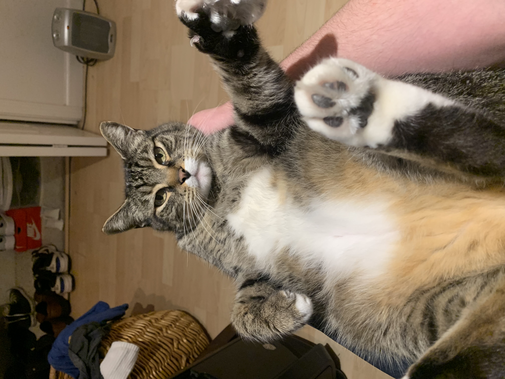

Morty
This is Morty.
Morty is an A$#@&^%
He may look cute and cuddly with an inviting belly, but to quote Game of Thrones "I choose violence". This is how Morty lives his life.
MORTY'S RULES
- Only head pets, or violence
- Constant feeding, or violence
- Walk past slowly, or violence
- He must sing the song of his people while you try to do homework
- Try to rub his belly, I dare you, but wait till i'm recording